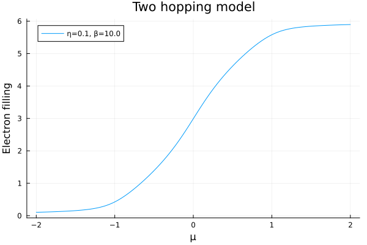

Electron density
The electron density describes the number of electrons in a system. It can be calculated by integrating the DOS times a Fermi distribution over all frequencies. Often calculations of the density are needed to ensure charge self-consistency.
Model calculation
For this tutorial and the optical conductivity tutorial we define a simple tight-binding model based on $t_{2g}$ orbitals with a nearest neighbor intraband hopping and a next-nearest neighbor interband hopping.
using StaticArrays
using OffsetArrays
using AutoBZ
H = OffsetArray(zeros(SMatrix{3,3,Float64,9}, 3,3,3), -1:1, -1:1, -1:1)
# intraband hoppings
t = -0.25 # nearest-neighbor hopping
H[ 1, 0, 0] = H[-1, 0, 0] = [ 0; 0; 0;; 0; t; 0;; 0; 0; t]
H[ 0, 1, 0] = H[ 0,-1, 0] = [ t; 0; 0;; 0; 0; 0;; 0; 0; t]
H[ 0, 0, 1] = H[ 0, 0,-1] = [ t; 0; 0;; 0; t; 0;; 0; 0; 0]
# interband hoppings
t′ = 0.05 # next-nearest neighbor hopping
H[ 0, 1, 1] = H[ 0,-1,-1] = [ 0; 0; 0;; 0; 0;t′;; 0;t′; 0]
H[ 0, 1,-1] = H[ 0,-1, 1] = -[ 0; 0; 0;; 0; 0;t′;; 0;t′; 0]
H[ 1, 0, 1] = H[-1, 0,-1] = [ 0; 0;t′;; 0; 0; 0;;t′; 0; 0]
H[ 1, 0,-1] = H[-1, 0, 1] = -[ 0; 0;t′;; 0; 0; 0;;t′; 0; 0]
H[ 1, 1, 0] = H[-1,-1, 0] = [ 0;t′; 0;;t′; 0; 0;; 0; 0; 0]
H[ 1,-1, 0] = H[-1, 1, 0] = -[ 0;t′; 0;;t′; 0; 0;; 0; 0; 0]
H = HamiltonianInterp(AutoBZ.Freq2RadSeries(FourierSeries(H, period=2pi)))3×3×3 and (1.0, 1.0, 1.0)-periodic HamiltonianInterp in Wannier() gaugeWith this Hamiltonian we can define an AutoBZ.ElectronDensitySolver and a solver that computes the electron density at a given temperature and scattering rate.
using LinearAlgebra
bz = load_bz(CubicSymIBZ(), Diagonal(collect(AutoBZ.period(H))))
η = 0.1 # eV
β = 10.0 # 1/eV
Σ = EtaSelfEnergy(η)
atol=1e-3
rtol=0.0
solver = ElectronDensitySolver(H, bz, PTR(npt=50), Σ, (-Inf, Inf), QuadGKJL(); β, abstol=atol/nsyms(bz), reltol=rtol)AutoBZCore.AutoBZCache{TrivialRep, CommonSolveFourierIntegralFunction{IntegralProblem{CommonSolveIntegralFunction{TraceInverseProblem{StaticArraysCore.SMatrix{3, 3, ComplexF64, 9}, Base.Pairs{Symbol, Union{}, Tuple{}, NamedTuple{(), Tuple{}}}}, JLTrInv, NamedTuple{(), Tuple{}}, AutoBZ.var"#85#90", AutoBZ.var"#86#91"{typeof(AutoBZ.spectral_function)}, Float64, AutoBZCore.FullSpecialize}, Tuple{Float64, Float64}, Tuple{Tuple{Float64, Float64}, ConstScalarSelfEnergy{ComplexF64, Float64}, StaticArraysCore.SMatrix{3, 3, ComplexF64, 9}, NamedTuple{(:β, :μ), Tuple{Float64, Float64}}}, NamedTuple{(:abstol, :reltol), Tuple{Float64, Float64}}}, QuadGKJL{typeof(LinearAlgebra.norm)}, HamiltonianInterp{Wannier(), 3, Float64, false, Nothing, Nothing, AutoBZ.Freq2RadSeries{3, Float64, false, FourierSeries{nothing, 3, false, OffsetArrays.OffsetArray{StaticArraysCore.SMatrix{3, 3, Float64, 9}, 3, Array{StaticArraysCore.SMatrix{3, 3, Float64, 9}, 3}}, Tuple{Int64, Int64, Int64}, Float64, Float64}, Tuple{Float64, Float64, Float64}, Tuple{Float64, Float64, Float64}}}, NamedTuple{(), Tuple{}}, AutoBZ.var"#88#93", AutoBZ.var"#89#94", Float64, AutoBZCore.FullSpecialize}, SymmetricBZ{Vector{StaticArraysCore.SMatrix{3, 3, Float64, 9}}, IteratedIntegration.TetrahedralLimits{3, Float64, Tuple{Float64, Float64, Float64}}, 3, Float64, Float64, 9}, NamedTuple{(:β, :μ), Tuple{Float64, Float64}}, PTR, AutoBZCore.IntegralSolver{CommonSolveFourierIntegralFunction{IntegralProblem{CommonSolveIntegralFunction{TraceInverseProblem{StaticArraysCore.SMatrix{3, 3, ComplexF64, 9}, Base.Pairs{Symbol, Union{}, Tuple{}, NamedTuple{(), Tuple{}}}}, JLTrInv, NamedTuple{(), Tuple{}}, AutoBZ.var"#85#90", AutoBZ.var"#86#91"{typeof(AutoBZ.spectral_function)}, Float64, AutoBZCore.FullSpecialize}, Tuple{Float64, Float64}, Tuple{Tuple{Float64, Float64}, ConstScalarSelfEnergy{ComplexF64, Float64}, StaticArraysCore.SMatrix{3, 3, ComplexF64, 9}, NamedTuple{(:β, :μ), Tuple{Float64, Float64}}}, NamedTuple{(:abstol, :reltol), Tuple{Float64, Float64}}}, QuadGKJL{typeof(LinearAlgebra.norm)}, HamiltonianInterp{Wannier(), 3, Float64, false, Nothing, Nothing, AutoBZ.Freq2RadSeries{3, Float64, false, FourierSeries{nothing, 3, false, OffsetArrays.OffsetArray{StaticArraysCore.SMatrix{3, 3, Float64, 9}, 3, Array{StaticArraysCore.SMatrix{3, 3, Float64, 9}, 3}}, Tuple{Int64, Int64, Int64}, Float64, Float64}, Tuple{Float64, Float64, Float64}, Tuple{Float64, Float64, Float64}}}, NamedTuple{(), Tuple{}}, AutoBZ.var"#88#93", AutoBZ.var"#89#94", Float64, AutoBZCore.FullSpecialize}, AutoSymPTR.Basis{3, Float64, StaticArraysCore.SMatrix{3, 3, Float64, 9}}, NamedTuple{(:β, :μ), Tuple{Float64, Float64}}, MonkhorstPack{Vector{StaticArraysCore.SMatrix{3, 3, Float64, 9}}}, NamedTuple{(:rule, :buffer, :ws, :cache, :integrand), Tuple{AutoBZCore.FourierMonkhorstPack{3, UInt8, Float64, StaticArraysCore.SMatrix{3, 3, ComplexF64, 9}}, Nothing, FourierWorkspace{HamiltonianInterp{Wannier(), 3, Float64, false, Nothing, Nothing, AutoBZ.Freq2RadSeries{3, Float64, false, FourierSeries{nothing, 3, false, OffsetArrays.OffsetArray{StaticArraysCore.SMatrix{3, 3, Float64, 9}, 3, Array{StaticArraysCore.SMatrix{3, 3, Float64, 9}, 3}}, Tuple{Int64, Int64, Int64}, Float64, Float64}, Tuple{Float64, Float64, Float64}, Tuple{Float64, Float64, Float64}}}, Tuple{FourierWorkspace{OffsetArrays.OffsetMatrix{StaticArraysCore.SMatrix{3, 3, ComplexF64, 9}, Matrix{StaticArraysCore.SMatrix{3, 3, ComplexF64, 9}}}, Tuple{FourierWorkspace{OffsetArrays.OffsetVector{StaticArraysCore.SMatrix{3, 3, ComplexF64, 9}, Vector{StaticArraysCore.SMatrix{3, 3, ComplexF64, 9}}}, Tuple{Tuple{Nothing, Nothing}}}}}}}, AutoBZCore.IntegralSolver{CommonSolveIntegralFunction{TraceInverseProblem{StaticArraysCore.SMatrix{3, 3, ComplexF64, 9}, Base.Pairs{Symbol, Union{}, Tuple{}, NamedTuple{(), Tuple{}}}}, JLTrInv, NamedTuple{(), Tuple{}}, AutoBZ.var"#85#90", AutoBZ.var"#86#91"{typeof(AutoBZ.spectral_function)}, Float64, AutoBZCore.FullSpecialize}, Tuple{Float64, Float64}, Tuple{Tuple{Float64, Float64}, ConstScalarSelfEnergy{ComplexF64, Float64}, StaticArraysCore.SMatrix{3, 3, ComplexF64, 9}, NamedTuple{(:β, :μ), Tuple{Float64, Float64}}}, QuadGKJL{typeof(LinearAlgebra.norm)}, Tuple{Vector{QuadGK.Segment{Float64, Float64, Float64}}, AutoBZ.TraceInverseSolver{StaticArraysCore.SMatrix{3, 3, ComplexF64, 9}, NamedTuple{(), Tuple{}}, JLTrInv, Nothing}, AutoBZCore.var"#4#5"{AutoBZ.TraceInverseSolver{StaticArraysCore.SMatrix{3, 3, ComplexF64, 9}, NamedTuple{(), Tuple{}}, JLTrInv, Nothing}, CommonSolveIntegralFunction{TraceInverseProblem{StaticArraysCore.SMatrix{3, 3, ComplexF64, 9}, Base.Pairs{Symbol, Union{}, Tuple{}, NamedTuple{(), Tuple{}}}}, JLTrInv, NamedTuple{(), Tuple{}}, AutoBZ.var"#85#90", AutoBZ.var"#86#91"{typeof(AutoBZ.spectral_function)}, Float64, AutoBZCore.FullSpecialize}}}, NamedTuple{(:abstol, :reltol), Tuple{Float64, Float64}}}, AutoBZCore.var"#157#158"{AutoBZCore.IntegralSolver{CommonSolveIntegralFunction{TraceInverseProblem{StaticArraysCore.SMatrix{3, 3, ComplexF64, 9}, Base.Pairs{Symbol, Union{}, Tuple{}, NamedTuple{(), Tuple{}}}}, JLTrInv, NamedTuple{(), Tuple{}}, AutoBZ.var"#85#90", AutoBZ.var"#86#91"{typeof(AutoBZ.spectral_function)}, Float64, AutoBZCore.FullSpecialize}, Tuple{Float64, Float64}, Tuple{Tuple{Float64, Float64}, ConstScalarSelfEnergy{ComplexF64, Float64}, StaticArraysCore.SMatrix{3, 3, ComplexF64, 9}, NamedTuple{(:β, :μ), Tuple{Float64, Float64}}}, QuadGKJL{typeof(LinearAlgebra.norm)}, Tuple{Vector{QuadGK.Segment{Float64, Float64, Float64}}, AutoBZ.TraceInverseSolver{StaticArraysCore.SMatrix{3, 3, ComplexF64, 9}, NamedTuple{(), Tuple{}}, JLTrInv, Nothing}, AutoBZCore.var"#4#5"{AutoBZ.TraceInverseSolver{StaticArraysCore.SMatrix{3, 3, ComplexF64, 9}, NamedTuple{(), Tuple{}}, JLTrInv, Nothing}, CommonSolveIntegralFunction{TraceInverseProblem{StaticArraysCore.SMatrix{3, 3, ComplexF64, 9}, Base.Pairs{Symbol, Union{}, Tuple{}, NamedTuple{(), Tuple{}}}}, JLTrInv, NamedTuple{(), Tuple{}}, AutoBZ.var"#85#90", AutoBZ.var"#86#91"{typeof(AutoBZ.spectral_function)}, Float64, AutoBZCore.FullSpecialize}}}, NamedTuple{(:abstol, :reltol), Tuple{Float64, Float64}}}, CommonSolveFourierIntegralFunction{IntegralProblem{CommonSolveIntegralFunction{TraceInverseProblem{StaticArraysCore.SMatrix{3, 3, ComplexF64, 9}, Base.Pairs{Symbol, Union{}, Tuple{}, NamedTuple{(), Tuple{}}}}, JLTrInv, NamedTuple{(), Tuple{}}, AutoBZ.var"#85#90", AutoBZ.var"#86#91"{typeof(AutoBZ.spectral_function)}, Float64, AutoBZCore.FullSpecialize}, Tuple{Float64, Float64}, Tuple{Tuple{Float64, Float64}, ConstScalarSelfEnergy{ComplexF64, Float64}, StaticArraysCore.SMatrix{3, 3, ComplexF64, 9}, NamedTuple{(:β, :μ), Tuple{Float64, Float64}}}, NamedTuple{(:abstol, :reltol), Tuple{Float64, Float64}}}, QuadGKJL{typeof(LinearAlgebra.norm)}, HamiltonianInterp{Wannier(), 3, Float64, false, Nothing, Nothing, AutoBZ.Freq2RadSeries{3, Float64, false, FourierSeries{nothing, 3, false, OffsetArrays.OffsetArray{StaticArraysCore.SMatrix{3, 3, Float64, 9}, 3, Array{StaticArraysCore.SMatrix{3, 3, Float64, 9}, 3}}, Tuple{Int64, Int64, Int64}, Float64, Float64}, Tuple{Float64, Float64, Float64}, Tuple{Float64, Float64, Float64}}}, NamedTuple{(), Tuple{}}, AutoBZ.var"#88#93", AutoBZ.var"#89#94", Float64, AutoBZCore.FullSpecialize}}}}, NamedTuple{(:abstol, :reltol), Tuple{Float64, Float64}}}, NamedTuple{(:abstol, :reltol), Tuple{Float64, Float64}}}(TrivialRep(), CommonSolveFourierIntegralFunction{IntegralProblem{CommonSolveIntegralFunction{TraceInverseProblem{StaticArraysCore.SMatrix{3, 3, ComplexF64, 9}, Base.Pairs{Symbol, Union{}, Tuple{}, NamedTuple{(), Tuple{}}}}, JLTrInv, NamedTuple{(), Tuple{}}, AutoBZ.var"#85#90", AutoBZ.var"#86#91"{typeof(AutoBZ.spectral_function)}, Float64, AutoBZCore.FullSpecialize}, Tuple{Float64, Float64}, Tuple{Tuple{Float64, Float64}, ConstScalarSelfEnergy{ComplexF64, Float64}, StaticArraysCore.SMatrix{3, 3, ComplexF64, 9}, NamedTuple{(:β, :μ), Tuple{Float64, Float64}}}, NamedTuple{(:abstol, :reltol), Tuple{Float64, Float64}}}, QuadGKJL{typeof(LinearAlgebra.norm)}, HamiltonianInterp{Wannier(), 3, Float64, false, Nothing, Nothing, AutoBZ.Freq2RadSeries{3, Float64, false, FourierSeries{nothing, 3, false, OffsetArrays.OffsetArray{StaticArraysCore.SMatrix{3, 3, Float64, 9}, 3, Array{StaticArraysCore.SMatrix{3, 3, Float64, 9}, 3}}, Tuple{Int64, Int64, Int64}, Float64, Float64}, Tuple{Float64, Float64, Float64}, Tuple{Float64, Float64, Float64}}}, NamedTuple{(), Tuple{}}, AutoBZ.var"#88#93", AutoBZ.var"#89#94", Float64, AutoBZCore.FullSpecialize}(IntegralProblem{CommonSolveIntegralFunction{TraceInverseProblem{StaticArraysCore.SMatrix{3, 3, ComplexF64, 9}, Base.Pairs{Symbol, Union{}, Tuple{}, NamedTuple{(), Tuple{}}}}, JLTrInv, NamedTuple{(), Tuple{}}, AutoBZ.var"#85#90", AutoBZ.var"#86#91"{typeof(AutoBZ.spectral_function)}, Float64, AutoBZCore.FullSpecialize}, Tuple{Float64, Float64}, Tuple{Tuple{Float64, Float64}, ConstScalarSelfEnergy{ComplexF64, Float64}, StaticArraysCore.SMatrix{3, 3, ComplexF64, 9}, NamedTuple{(:β, :μ), Tuple{Float64, Float64}}}, NamedTuple{(:abstol, :reltol), Tuple{Float64, Float64}}}(CommonSolveIntegralFunction{TraceInverseProblem{StaticArraysCore.SMatrix{3, 3, ComplexF64, 9}, Base.Pairs{Symbol, Union{}, Tuple{}, NamedTuple{(), Tuple{}}}}, JLTrInv, NamedTuple{(), Tuple{}}, AutoBZ.var"#85#90", AutoBZ.var"#86#91"{typeof(AutoBZ.spectral_function)}, Float64, AutoBZCore.FullSpecialize}(TraceInverseProblem{StaticArraysCore.SMatrix{3, 3, ComplexF64, 9}, Base.Pairs{Symbol, Union{}, Tuple{}, NamedTuple{(), Tuple{}}}}(ComplexF64[NaN + 0.1im 1.1998078261294862e-32 - 0.0im 1.1998078261294862e-32 - 0.0im; 1.1998078261294862e-32 - 0.0im NaN + 0.1im 1.1998078261294862e-32 - 0.0im; 1.1998078261294862e-32 - 0.0im 1.1998078261294862e-32 - 0.0im NaN + 0.1im], Base.Pairs{Symbol, Union{}, Tuple{}, NamedTuple{(), Tuple{}}}()), JLTrInv(), NamedTuple(), AutoBZ.var"#85#90"(Core.Box(CommonSolveFourierIntegralFunction{IntegralProblem{CommonSolveIntegralFunction{TraceInverseProblem{StaticArraysCore.SMatrix{3, 3, ComplexF64, 9}, Base.Pairs{Symbol, Union{}, Tuple{}, NamedTuple{(), Tuple{}}}}, JLTrInv, NamedTuple{(), Tuple{}}, AutoBZ.var"#85#90", AutoBZ.var"#86#91"{typeof(AutoBZ.spectral_function)}, Float64, AutoBZCore.FullSpecialize}, Tuple{Float64, Float64}, Tuple{Tuple{Float64, Float64}, ConstScalarSelfEnergy{ComplexF64, Float64}, StaticArraysCore.SMatrix{3, 3, ComplexF64, 9}, NamedTuple{(:β, :μ), Tuple{Float64, Float64}}}, NamedTuple{(:abstol, :reltol), Tuple{Float64, Float64}}}, QuadGKJL{typeof(LinearAlgebra.norm)}, HamiltonianInterp{Wannier(), 3, Float64, false, Nothing, Nothing, AutoBZ.Freq2RadSeries{3, Float64, false, FourierSeries{nothing, 3, false, OffsetArrays.OffsetArray{StaticArraysCore.SMatrix{3, 3, Float64, 9}, 3, Array{StaticArraysCore.SMatrix{3, 3, Float64, 9}, 3}}, Tuple{Int64, Int64, Int64}, Float64, Float64}, Tuple{Float64, Float64, Float64}, Tuple{Float64, Float64, Float64}}}, NamedTuple{(), Tuple{}}, AutoBZ.var"#88#93", AutoBZ.var"#89#94", Float64, AutoBZCore.FullSpecialize}(#= circular reference @-5 =#)), Core.Box(LinearAlgebra.UniformScaling{ComplexF64}(NaN + 0.1im))), AutoBZ.var"#86#91"{typeof(AutoBZ.spectral_function)}(AutoBZ.spectral_function), NaN, AutoBZCore.FullSpecialize()), (-Inf, 3.604365338911715), ((-Inf, Inf), ConstScalarSelfEnergy{ComplexF64, Float64}(0.0 - 0.1im, -Inf, Inf), ComplexF64[-1.0 + 0.0im -1.1998078261294862e-32 + 0.0im -1.1998078261294862e-32 + 0.0im; -1.1998078261294862e-32 + 0.0im -1.0 + 0.0im -1.1998078261294862e-32 + 0.0im; -1.1998078261294862e-32 + 0.0im -1.1998078261294862e-32 + 0.0im -1.0 + 0.0im], (β = 10.0, μ = 0.0)), (abstol = 1.749757727495632e-9, reltol = 0.0)), QuadGKJL{typeof(LinearAlgebra.norm)}(7, LinearAlgebra.norm), 3×3×3 and (1.0, 1.0, 1.0)-periodic HamiltonianInterp in Wannier() gauge, NamedTuple(), AutoBZ.var"#88#93"(Core.Box(ConstScalarSelfEnergy{ComplexF64, Float64}(0.0 - 0.1im, -Inf, Inf)), Core.Box((-Inf, Inf))), AutoBZ.var"#89#94"(), NaN, AutoBZCore.FullSpecialize(), false), 3-dimensional Brillouin zone with 48 symmetries, (β = 10.0, μ = 0.0), PTR(50, 1), AutoBZCore.IntegralSolver{CommonSolveFourierIntegralFunction{IntegralProblem{CommonSolveIntegralFunction{TraceInverseProblem{StaticArraysCore.SMatrix{3, 3, ComplexF64, 9}, Base.Pairs{Symbol, Union{}, Tuple{}, NamedTuple{(), Tuple{}}}}, JLTrInv, NamedTuple{(), Tuple{}}, AutoBZ.var"#85#90", AutoBZ.var"#86#91"{typeof(AutoBZ.spectral_function)}, Float64, AutoBZCore.FullSpecialize}, Tuple{Float64, Float64}, Tuple{Tuple{Float64, Float64}, ConstScalarSelfEnergy{ComplexF64, Float64}, StaticArraysCore.SMatrix{3, 3, ComplexF64, 9}, NamedTuple{(:β, :μ), Tuple{Float64, Float64}}}, NamedTuple{(:abstol, :reltol), Tuple{Float64, Float64}}}, QuadGKJL{typeof(LinearAlgebra.norm)}, HamiltonianInterp{Wannier(), 3, Float64, false, Nothing, Nothing, AutoBZ.Freq2RadSeries{3, Float64, false, FourierSeries{nothing, 3, false, OffsetArrays.OffsetArray{StaticArraysCore.SMatrix{3, 3, Float64, 9}, 3, Array{StaticArraysCore.SMatrix{3, 3, Float64, 9}, 3}}, Tuple{Int64, Int64, Int64}, Float64, Float64}, Tuple{Float64, Float64, Float64}, Tuple{Float64, Float64, Float64}}}, NamedTuple{(), Tuple{}}, AutoBZ.var"#88#93", AutoBZ.var"#89#94", Float64, AutoBZCore.FullSpecialize}, AutoSymPTR.Basis{3, Float64, StaticArraysCore.SMatrix{3, 3, Float64, 9}}, NamedTuple{(:β, :μ), Tuple{Float64, Float64}}, MonkhorstPack{Vector{StaticArraysCore.SMatrix{3, 3, Float64, 9}}}, NamedTuple{(:rule, :buffer, :ws, :cache, :integrand), Tuple{AutoBZCore.FourierMonkhorstPack{3, UInt8, Float64, StaticArraysCore.SMatrix{3, 3, ComplexF64, 9}}, Nothing, FourierWorkspace{HamiltonianInterp{Wannier(), 3, Float64, false, Nothing, Nothing, AutoBZ.Freq2RadSeries{3, Float64, false, FourierSeries{nothing, 3, false, OffsetArrays.OffsetArray{StaticArraysCore.SMatrix{3, 3, Float64, 9}, 3, Array{StaticArraysCore.SMatrix{3, 3, Float64, 9}, 3}}, Tuple{Int64, Int64, Int64}, Float64, Float64}, Tuple{Float64, Float64, Float64}, Tuple{Float64, Float64, Float64}}}, Tuple{FourierWorkspace{OffsetArrays.OffsetMatrix{StaticArraysCore.SMatrix{3, 3, ComplexF64, 9}, Matrix{StaticArraysCore.SMatrix{3, 3, ComplexF64, 9}}}, Tuple{FourierWorkspace{OffsetArrays.OffsetVector{StaticArraysCore.SMatrix{3, 3, ComplexF64, 9}, Vector{StaticArraysCore.SMatrix{3, 3, ComplexF64, 9}}}, Tuple{Tuple{Nothing, Nothing}}}}}}}, AutoBZCore.IntegralSolver{CommonSolveIntegralFunction{TraceInverseProblem{StaticArraysCore.SMatrix{3, 3, ComplexF64, 9}, Base.Pairs{Symbol, Union{}, Tuple{}, NamedTuple{(), Tuple{}}}}, JLTrInv, NamedTuple{(), Tuple{}}, AutoBZ.var"#85#90", AutoBZ.var"#86#91"{typeof(AutoBZ.spectral_function)}, Float64, AutoBZCore.FullSpecialize}, Tuple{Float64, Float64}, Tuple{Tuple{Float64, Float64}, ConstScalarSelfEnergy{ComplexF64, Float64}, StaticArraysCore.SMatrix{3, 3, ComplexF64, 9}, NamedTuple{(:β, :μ), Tuple{Float64, Float64}}}, QuadGKJL{typeof(LinearAlgebra.norm)}, Tuple{Vector{QuadGK.Segment{Float64, Float64, Float64}}, AutoBZ.TraceInverseSolver{StaticArraysCore.SMatrix{3, 3, ComplexF64, 9}, NamedTuple{(), Tuple{}}, JLTrInv, Nothing}, AutoBZCore.var"#4#5"{AutoBZ.TraceInverseSolver{StaticArraysCore.SMatrix{3, 3, ComplexF64, 9}, NamedTuple{(), Tuple{}}, JLTrInv, Nothing}, CommonSolveIntegralFunction{TraceInverseProblem{StaticArraysCore.SMatrix{3, 3, ComplexF64, 9}, Base.Pairs{Symbol, Union{}, Tuple{}, NamedTuple{(), Tuple{}}}}, JLTrInv, NamedTuple{(), Tuple{}}, AutoBZ.var"#85#90", AutoBZ.var"#86#91"{typeof(AutoBZ.spectral_function)}, Float64, AutoBZCore.FullSpecialize}}}, NamedTuple{(:abstol, :reltol), Tuple{Float64, Float64}}}, AutoBZCore.var"#157#158"{AutoBZCore.IntegralSolver{CommonSolveIntegralFunction{TraceInverseProblem{StaticArraysCore.SMatrix{3, 3, ComplexF64, 9}, Base.Pairs{Symbol, Union{}, Tuple{}, NamedTuple{(), Tuple{}}}}, JLTrInv, NamedTuple{(), Tuple{}}, AutoBZ.var"#85#90", AutoBZ.var"#86#91"{typeof(AutoBZ.spectral_function)}, Float64, AutoBZCore.FullSpecialize}, Tuple{Float64, Float64}, Tuple{Tuple{Float64, Float64}, ConstScalarSelfEnergy{ComplexF64, Float64}, StaticArraysCore.SMatrix{3, 3, ComplexF64, 9}, NamedTuple{(:β, :μ), Tuple{Float64, Float64}}}, QuadGKJL{typeof(LinearAlgebra.norm)}, Tuple{Vector{QuadGK.Segment{Float64, Float64, Float64}}, AutoBZ.TraceInverseSolver{StaticArraysCore.SMatrix{3, 3, ComplexF64, 9}, NamedTuple{(), Tuple{}}, JLTrInv, Nothing}, AutoBZCore.var"#4#5"{AutoBZ.TraceInverseSolver{StaticArraysCore.SMatrix{3, 3, ComplexF64, 9}, NamedTuple{(), Tuple{}}, JLTrInv, Nothing}, CommonSolveIntegralFunction{TraceInverseProblem{StaticArraysCore.SMatrix{3, 3, ComplexF64, 9}, Base.Pairs{Symbol, Union{}, Tuple{}, NamedTuple{(), Tuple{}}}}, JLTrInv, NamedTuple{(), Tuple{}}, AutoBZ.var"#85#90", AutoBZ.var"#86#91"{typeof(AutoBZ.spectral_function)}, Float64, AutoBZCore.FullSpecialize}}}, NamedTuple{(:abstol, :reltol), Tuple{Float64, Float64}}}, CommonSolveFourierIntegralFunction{IntegralProblem{CommonSolveIntegralFunction{TraceInverseProblem{StaticArraysCore.SMatrix{3, 3, ComplexF64, 9}, Base.Pairs{Symbol, Union{}, Tuple{}, NamedTuple{(), Tuple{}}}}, JLTrInv, NamedTuple{(), Tuple{}}, AutoBZ.var"#85#90", AutoBZ.var"#86#91"{typeof(AutoBZ.spectral_function)}, Float64, AutoBZCore.FullSpecialize}, Tuple{Float64, Float64}, Tuple{Tuple{Float64, Float64}, ConstScalarSelfEnergy{ComplexF64, Float64}, StaticArraysCore.SMatrix{3, 3, ComplexF64, 9}, NamedTuple{(:β, :μ), Tuple{Float64, Float64}}}, NamedTuple{(:abstol, :reltol), Tuple{Float64, Float64}}}, QuadGKJL{typeof(LinearAlgebra.norm)}, HamiltonianInterp{Wannier(), 3, Float64, false, Nothing, Nothing, AutoBZ.Freq2RadSeries{3, Float64, false, FourierSeries{nothing, 3, false, OffsetArrays.OffsetArray{StaticArraysCore.SMatrix{3, 3, Float64, 9}, 3, Array{StaticArraysCore.SMatrix{3, 3, Float64, 9}, 3}}, Tuple{Int64, Int64, Int64}, Float64, Float64}, Tuple{Float64, Float64, Float64}, Tuple{Float64, Float64, Float64}}}, NamedTuple{(), Tuple{}}, AutoBZ.var"#88#93", AutoBZ.var"#89#94", Float64, AutoBZCore.FullSpecialize}}}}, NamedTuple{(:abstol, :reltol), Tuple{Float64, Float64}}}(CommonSolveFourierIntegralFunction{IntegralProblem{CommonSolveIntegralFunction{TraceInverseProblem{StaticArraysCore.SMatrix{3, 3, ComplexF64, 9}, Base.Pairs{Symbol, Union{}, Tuple{}, NamedTuple{(), Tuple{}}}}, JLTrInv, NamedTuple{(), Tuple{}}, AutoBZ.var"#85#90", AutoBZ.var"#86#91"{typeof(AutoBZ.spectral_function)}, Float64, AutoBZCore.FullSpecialize}, Tuple{Float64, Float64}, Tuple{Tuple{Float64, Float64}, ConstScalarSelfEnergy{ComplexF64, Float64}, StaticArraysCore.SMatrix{3, 3, ComplexF64, 9}, NamedTuple{(:β, :μ), Tuple{Float64, Float64}}}, NamedTuple{(:abstol, :reltol), Tuple{Float64, Float64}}}, QuadGKJL{typeof(LinearAlgebra.norm)}, HamiltonianInterp{Wannier(), 3, Float64, false, Nothing, Nothing, AutoBZ.Freq2RadSeries{3, Float64, false, FourierSeries{nothing, 3, false, OffsetArrays.OffsetArray{StaticArraysCore.SMatrix{3, 3, Float64, 9}, 3, Array{StaticArraysCore.SMatrix{3, 3, Float64, 9}, 3}}, Tuple{Int64, Int64, Int64}, Float64, Float64}, Tuple{Float64, Float64, Float64}, Tuple{Float64, Float64, Float64}}}, NamedTuple{(), Tuple{}}, AutoBZ.var"#88#93", AutoBZ.var"#89#94", Float64, AutoBZCore.FullSpecialize}(IntegralProblem{CommonSolveIntegralFunction{TraceInverseProblem{StaticArraysCore.SMatrix{3, 3, ComplexF64, 9}, Base.Pairs{Symbol, Union{}, Tuple{}, NamedTuple{(), Tuple{}}}}, JLTrInv, NamedTuple{(), Tuple{}}, AutoBZ.var"#85#90", AutoBZ.var"#86#91"{typeof(AutoBZ.spectral_function)}, Float64, AutoBZCore.FullSpecialize}, Tuple{Float64, Float64}, Tuple{Tuple{Float64, Float64}, ConstScalarSelfEnergy{ComplexF64, Float64}, StaticArraysCore.SMatrix{3, 3, ComplexF64, 9}, NamedTuple{(:β, :μ), Tuple{Float64, Float64}}}, NamedTuple{(:abstol, :reltol), Tuple{Float64, Float64}}}(CommonSolveIntegralFunction{TraceInverseProblem{StaticArraysCore.SMatrix{3, 3, ComplexF64, 9}, Base.Pairs{Symbol, Union{}, Tuple{}, NamedTuple{(), Tuple{}}}}, JLTrInv, NamedTuple{(), Tuple{}}, AutoBZ.var"#85#90", AutoBZ.var"#86#91"{typeof(AutoBZ.spectral_function)}, Float64, AutoBZCore.FullSpecialize}(TraceInverseProblem{StaticArraysCore.SMatrix{3, 3, ComplexF64, 9}, Base.Pairs{Symbol, Union{}, Tuple{}, NamedTuple{(), Tuple{}}}}(ComplexF64[NaN + 0.1im 1.1998078261294862e-32 - 0.0im 1.1998078261294862e-32 - 0.0im; 1.1998078261294862e-32 - 0.0im NaN + 0.1im 1.1998078261294862e-32 - 0.0im; 1.1998078261294862e-32 - 0.0im 1.1998078261294862e-32 - 0.0im NaN + 0.1im], Base.Pairs{Symbol, Union{}, Tuple{}, NamedTuple{(), Tuple{}}}()), JLTrInv(), NamedTuple(), AutoBZ.var"#85#90"(Core.Box(CommonSolveFourierIntegralFunction{IntegralProblem{CommonSolveIntegralFunction{TraceInverseProblem{StaticArraysCore.SMatrix{3, 3, ComplexF64, 9}, Base.Pairs{Symbol, Union{}, Tuple{}, NamedTuple{(), Tuple{}}}}, JLTrInv, NamedTuple{(), Tuple{}}, AutoBZ.var"#85#90", AutoBZ.var"#86#91"{typeof(AutoBZ.spectral_function)}, Float64, AutoBZCore.FullSpecialize}, Tuple{Float64, Float64}, Tuple{Tuple{Float64, Float64}, ConstScalarSelfEnergy{ComplexF64, Float64}, StaticArraysCore.SMatrix{3, 3, ComplexF64, 9}, NamedTuple{(:β, :μ), Tuple{Float64, Float64}}}, NamedTuple{(:abstol, :reltol), Tuple{Float64, Float64}}}, QuadGKJL{typeof(LinearAlgebra.norm)}, HamiltonianInterp{Wannier(), 3, Float64, false, Nothing, Nothing, AutoBZ.Freq2RadSeries{3, Float64, false, FourierSeries{nothing, 3, false, OffsetArrays.OffsetArray{StaticArraysCore.SMatrix{3, 3, Float64, 9}, 3, Array{StaticArraysCore.SMatrix{3, 3, Float64, 9}, 3}}, Tuple{Int64, Int64, Int64}, Float64, Float64}, Tuple{Float64, Float64, Float64}, Tuple{Float64, Float64, Float64}}}, NamedTuple{(), Tuple{}}, AutoBZ.var"#88#93", AutoBZ.var"#89#94", Float64, AutoBZCore.FullSpecialize}(#= circular reference @-5 =#)), Core.Box(LinearAlgebra.UniformScaling{ComplexF64}(NaN + 0.1im))), AutoBZ.var"#86#91"{typeof(AutoBZ.spectral_function)}(AutoBZ.spectral_function), NaN, AutoBZCore.FullSpecialize()), (-Inf, 3.604365338911715), ((-Inf, Inf), ConstScalarSelfEnergy{ComplexF64, Float64}(0.0 - 0.1im, -Inf, Inf), ComplexF64[-1.0 + 0.0im -1.1998078261294862e-32 + 0.0im -1.1998078261294862e-32 + 0.0im; -1.1998078261294862e-32 + 0.0im -1.0 + 0.0im -1.1998078261294862e-32 + 0.0im; -1.1998078261294862e-32 + 0.0im -1.1998078261294862e-32 + 0.0im -1.0 + 0.0im], (β = 10.0, μ = 0.0)), (abstol = 1.749757727495632e-9, reltol = 0.0)), QuadGKJL{typeof(LinearAlgebra.norm)}(7, LinearAlgebra.norm), 3×3×3 and (1.0, 1.0, 1.0)-periodic HamiltonianInterp in Wannier() gauge, NamedTuple(), AutoBZ.var"#88#93"(Core.Box(ConstScalarSelfEnergy{ComplexF64, Float64}(0.0 - 0.1im, -Inf, Inf)), Core.Box((-Inf, Inf))), AutoBZ.var"#89#94"(), NaN, AutoBZCore.FullSpecialize(), false), AutoSymPTR.Basis{3, Float64, StaticArraysCore.SMatrix{3, 3, Float64, 9}}([1.0 0.0 0.0; 0.0 1.0 0.0; 0.0 0.0 1.0]), (β = 10.0, μ = 0.0), MonkhorstPack{Vector{StaticArraysCore.SMatrix{3, 3, Float64, 9}}}(50, StaticArraysCore.SMatrix{3, 3, Float64, 9}[[1.0 0.0 0.0; 0.0 1.0 0.0; 0.0 0.0 1.0], [-1.0 0.0 0.0; 0.0 1.0 0.0; 0.0 0.0 1.0], [1.0 0.0 0.0; 0.0 -1.0 0.0; 0.0 0.0 1.0], [-1.0 0.0 0.0; 0.0 -1.0 0.0; 0.0 0.0 1.0], [1.0 0.0 0.0; 0.0 1.0 0.0; 0.0 0.0 -1.0], [-1.0 0.0 0.0; 0.0 1.0 0.0; 0.0 0.0 -1.0], [1.0 0.0 0.0; 0.0 -1.0 0.0; 0.0 0.0 -1.0], [-1.0 0.0 0.0; 0.0 -1.0 0.0; 0.0 0.0 -1.0], [1.0 0.0 0.0; 0.0 0.0 1.0; 0.0 1.0 0.0], [-1.0 0.0 0.0; 0.0 0.0 1.0; 0.0 1.0 0.0] … [0.0 0.0 1.0; -1.0 0.0 0.0; 0.0 -1.0 0.0], [0.0 0.0 -1.0; -1.0 0.0 0.0; 0.0 -1.0 0.0], [0.0 0.0 1.0; 0.0 1.0 0.0; 1.0 0.0 0.0], [0.0 0.0 -1.0; 0.0 1.0 0.0; 1.0 0.0 0.0], [0.0 0.0 1.0; 0.0 -1.0 0.0; 1.0 0.0 0.0], [0.0 0.0 -1.0; 0.0 -1.0 0.0; 1.0 0.0 0.0], [0.0 0.0 1.0; 0.0 1.0 0.0; -1.0 0.0 0.0], [0.0 0.0 -1.0; 0.0 1.0 0.0; -1.0 0.0 0.0], [0.0 0.0 1.0; 0.0 -1.0 0.0; -1.0 0.0 0.0], [0.0 0.0 -1.0; 0.0 -1.0 0.0; -1.0 0.0 0.0]], 1), (rule = AutoBZCore.FourierMonkhorstPack{3, UInt8, Float64, StaticArraysCore.SMatrix{3, 3, ComplexF64, 9}}(50, 48, Tuple{UInt8, AutoBZCore.FourierValue{StaticArraysCore.SVector{3, Float64}, StaticArraysCore.SMatrix{3, 3, ComplexF64, 9}}}[(0x01, AutoBZCore.FourierValue{StaticArraysCore.SVector{3, Float64}, StaticArraysCore.SMatrix{3, 3, ComplexF64, 9}}([0.0, 0.0, 0.0], ComplexF64[-1.0 + 0.0im 0.0 + 0.0im 0.0 + 0.0im; 0.0 + 0.0im -1.0 + 0.0im 0.0 + 0.0im; 0.0 + 0.0im 0.0 + 0.0im -1.0 + 0.0im])), (0x06, AutoBZCore.FourierValue{StaticArraysCore.SVector{3, Float64}, StaticArraysCore.SMatrix{3, 3, ComplexF64, 9}}([0.02, 0.0, 0.0], ComplexF64[-1.0 + 0.0im 0.0 + 0.0im 0.0 + 0.0im; 0.0 + 0.0im -0.996057350657239 + 0.0im 0.0 + 0.0im; 0.0 + 0.0im 0.0 + 0.0im -0.996057350657239 + 0.0im])), (0x06, AutoBZCore.FourierValue{StaticArraysCore.SVector{3, Float64}, StaticArraysCore.SMatrix{3, 3, ComplexF64, 9}}([0.04, 0.0, 0.0], ComplexF64[-1.0 + 0.0im 0.0 + 0.0im 0.0 + 0.0im; 0.0 + 0.0im -0.9842915805643155 + 0.0im 0.0 + 0.0im; 0.0 + 0.0im 0.0 + 0.0im -0.9842915805643155 + 0.0im])), (0x06, AutoBZCore.FourierValue{StaticArraysCore.SVector{3, Float64}, StaticArraysCore.SMatrix{3, 3, ComplexF64, 9}}([0.06, 0.0, 0.0], ComplexF64[-1.0 + 0.0im 0.0 + 0.0im 0.0 + 0.0im; 0.0 + 0.0im -0.9648882429441257 + 0.0im 0.0 + 0.0im; 0.0 + 0.0im 0.0 + 0.0im -0.9648882429441257 + 0.0im])), (0x06, AutoBZCore.FourierValue{StaticArraysCore.SVector{3, Float64}, StaticArraysCore.SMatrix{3, 3, ComplexF64, 9}}([0.08, 0.0, 0.0], ComplexF64[-1.0 + 0.0im 0.0 + 0.0im 0.0 + 0.0im; 0.0 + 0.0im -0.9381533400219317 + 0.0im 0.0 + 0.0im; 0.0 + 0.0im 0.0 + 0.0im -0.9381533400219317 + 0.0im])), (0x06, AutoBZCore.FourierValue{StaticArraysCore.SVector{3, Float64}, StaticArraysCore.SMatrix{3, 3, ComplexF64, 9}}([0.1, 0.0, 0.0], ComplexF64[-1.0 + 0.0im 0.0 + 0.0im 0.0 + 0.0im; 0.0 + 0.0im -0.9045084971874737 + 0.0im 0.0 + 0.0im; 0.0 + 0.0im 0.0 + 0.0im -0.9045084971874737 + 0.0im])), (0x06, AutoBZCore.FourierValue{StaticArraysCore.SVector{3, Float64}, StaticArraysCore.SMatrix{3, 3, ComplexF64, 9}}([0.12, 0.0, 0.0], ComplexF64[-1.0 + 0.0im 0.0 + 0.0im 0.0 + 0.0im; 0.0 + 0.0im -0.8644843137107059 + 0.0im 0.0 + 0.0im; 0.0 + 0.0im 0.0 + 0.0im -0.8644843137107059 + 0.0im])), (0x06, AutoBZCore.FourierValue{StaticArraysCore.SVector{3, Float64}, StaticArraysCore.SMatrix{3, 3, ComplexF64, 9}}([0.14, 0.0, 0.0], ComplexF64[-1.0 + 0.0im 0.0 + 0.0im 0.0 + 0.0im; 0.0 + 0.0im -0.8187119948743449 + 0.0im 0.0 + 0.0im; 0.0 + 0.0im 0.0 + 0.0im -0.8187119948743449 + 0.0im])), (0x06, AutoBZCore.FourierValue{StaticArraysCore.SVector{3, Float64}, StaticArraysCore.SMatrix{3, 3, ComplexF64, 9}}([0.16, 0.0, 0.0], ComplexF64[-1.0 + 0.0im 0.0 + 0.0im 0.0 + 0.0im; 0.0 + 0.0im -0.7679133974894983 + 0.0im 0.0 + 0.0im; 0.0 + 0.0im 0.0 + 0.0im -0.7679133974894983 + 0.0im])), (0x06, AutoBZCore.FourierValue{StaticArraysCore.SVector{3, Float64}, StaticArraysCore.SMatrix{3, 3, ComplexF64, 9}}([0.18, 0.0, 0.0], ComplexF64[-1.0 + 0.0im 0.0 + 0.0im 0.0 + 0.0im; 0.0 + 0.0im -0.7128896457825364 + 0.0im 0.0 + 0.0im; 0.0 + 0.0im 0.0 + 0.0im -0.7128896457825364 + 0.0im])) … (0x08, AutoBZCore.FourierValue{StaticArraysCore.SVector{3, Float64}, StaticArraysCore.SMatrix{3, 3, ComplexF64, 9}}([0.46, 0.46, 0.46], ComplexF64[0.9685831611286311 + 0.0im -0.012369331995613646 + 1.1684048801708388e-18im -0.012369331995613646 + 1.1684048801708388e-18im; -0.012369331995613646 + 1.1684048801708388e-18im 0.9685831611286311 + 0.0im -0.012369331995613646 + 1.1684048801708388e-18im; -0.012369331995613646 + 1.1684048801708388e-18im -0.012369331995613646 + 1.1684048801708388e-18im 0.9685831611286311 + 0.0im])), (0x18, AutoBZCore.FourierValue{StaticArraysCore.SVector{3, Float64}, StaticArraysCore.SMatrix{3, 3, ComplexF64, 9}}([0.48, 0.46, 0.46], ComplexF64[0.9685831611286311 + 0.0im -0.006233821542622658 + 1.7123984937192068e-18im -0.006233821542622658 + 1.7123984937192068e-18im; -0.006233821542622658 + 1.7123984937192068e-18im 0.9803489312215543 + 0.0im -0.012369331995613646 + 1.1684048801708388e-18im; -0.006233821542622658 + 1.7123984937192068e-18im -0.012369331995613646 + 1.1684048801708388e-18im 0.9803489312215543 + 0.0im])), (0x0c, AutoBZCore.FourierValue{StaticArraysCore.SVector{3, Float64}, StaticArraysCore.SMatrix{3, 3, ComplexF64, 9}}([0.5, 0.46, 0.46], ComplexF64[0.9685831611286311 + 0.0im -6.0911454859351185e-18 + 0.0im -6.0911454859351185e-18 + 0.0im; -6.0911454859351185e-18 + 0.0im 0.9842915805643155 + 0.0im -0.012369331995613646 + 1.1684048801708388e-18im; -6.0911454859351185e-18 + 0.0im -0.012369331995613646 + 1.1684048801708388e-18im 0.9842915805643155 + 0.0im])), (0x18, AutoBZCore.FourierValue{StaticArraysCore.SVector{3, Float64}, StaticArraysCore.SMatrix{3, 3, ComplexF64, 9}}([0.48, 0.48, 0.46], ComplexF64[0.9803489312215543 + 0.0im -0.0031416838871369027 - 4.403919550198665e-19im -0.006233821542622658 + 1.7123984937192068e-18im; -0.0031416838871369027 - 4.403919550198665e-19im 0.9803489312215543 + 0.0im -0.006233821542622658 + 1.7123984937192068e-18im; -0.006233821542622658 + 1.7123984937192068e-18im -0.006233821542622658 + 1.7123984937192068e-18im 0.9921147013144778 + 0.0im])), (0x18, AutoBZCore.FourierValue{StaticArraysCore.SVector{3, Float64}, StaticArraysCore.SMatrix{3, 3, ComplexF64, 9}}([0.5, 0.48, 0.46], ComplexF64[0.9803489312215543 + 0.0im -3.0697788662262633e-18 + 0.0im -6.0911454859351185e-18 + 0.0im; -3.0697788662262633e-18 + 0.0im 0.9842915805643155 + 0.0im -0.006233821542622658 + 1.7123984937192068e-18im; -6.0911454859351185e-18 + 0.0im -0.006233821542622658 + 1.7123984937192068e-18im 0.9960573506572389 + 0.0im])), (0x06, AutoBZCore.FourierValue{StaticArraysCore.SVector{3, Float64}, StaticArraysCore.SMatrix{3, 3, ComplexF64, 9}}([0.5, 0.5, 0.46], ComplexF64[0.9842915805643155 + 0.0im -2.9995195653237156e-33 + 0.0im -6.0911454859351185e-18 + 0.0im; -2.9995195653237156e-33 + 0.0im 0.9842915805643155 + 0.0im -6.0911454859351185e-18 + 0.0im; -6.0911454859351185e-18 + 0.0im -6.0911454859351185e-18 + 0.0im 1.0 + 0.0im])), (0x08, AutoBZCore.FourierValue{StaticArraysCore.SVector{3, Float64}, StaticArraysCore.SMatrix{3, 3, ComplexF64, 9}}([0.48, 0.48, 0.48], ComplexF64[0.9921147013144778 + 0.0im -0.0031416838871369027 - 4.403919550198665e-19im -0.0031416838871369027 - 4.403919550198665e-19im; -0.0031416838871369027 - 4.403919550198665e-19im 0.9921147013144778 + 0.0im -0.0031416838871369027 - 4.403919550198665e-19im; -0.0031416838871369027 - 4.403919550198665e-19im -0.0031416838871369027 - 4.403919550198665e-19im 0.9921147013144778 + 0.0im])), (0x0c, AutoBZCore.FourierValue{StaticArraysCore.SVector{3, Float64}, StaticArraysCore.SMatrix{3, 3, ComplexF64, 9}}([0.5, 0.48, 0.48], ComplexF64[0.9921147013144778 + 0.0im -3.0697788662262633e-18 + 0.0im -3.0697788662262633e-18 + 0.0im; -3.0697788662262633e-18 + 0.0im 0.9960573506572389 + 0.0im -0.0031416838871369027 - 4.403919550198665e-19im; -3.0697788662262633e-18 + 0.0im -0.0031416838871369027 - 4.403919550198665e-19im 0.9960573506572389 + 0.0im])), (0x06, AutoBZCore.FourierValue{StaticArraysCore.SVector{3, Float64}, StaticArraysCore.SMatrix{3, 3, ComplexF64, 9}}([0.5, 0.5, 0.48], ComplexF64[0.9960573506572389 + 0.0im -2.9995195653237156e-33 + 0.0im -3.0697788662262633e-18 + 0.0im; -2.9995195653237156e-33 + 0.0im 0.9960573506572389 + 0.0im -3.0697788662262633e-18 + 0.0im; -3.0697788662262633e-18 + 0.0im -3.0697788662262633e-18 + 0.0im 1.0 + 0.0im])), (0x01, AutoBZCore.FourierValue{StaticArraysCore.SVector{3, Float64}, StaticArraysCore.SMatrix{3, 3, ComplexF64, 9}}([0.5, 0.5, 0.5], ComplexF64[1.0 + 0.0im -2.9995195653237156e-33 + 0.0im -2.9995195653237156e-33 + 0.0im; -2.9995195653237156e-33 + 0.0im 1.0 + 0.0im -2.9995195653237156e-33 + 0.0im; -2.9995195653237156e-33 + 0.0im -2.9995195653237156e-33 + 0.0im 1.0 + 0.0im]))]), buffer = nothing, ws = FourierWorkspace{HamiltonianInterp{Wannier(), 3, Float64, false, Nothing, Nothing, AutoBZ.Freq2RadSeries{3, Float64, false, FourierSeries{nothing, 3, false, OffsetArrays.OffsetArray{StaticArraysCore.SMatrix{3, 3, Float64, 9}, 3, Array{StaticArraysCore.SMatrix{3, 3, Float64, 9}, 3}}, Tuple{Int64, Int64, Int64}, Float64, Float64}, Tuple{Float64, Float64, Float64}, Tuple{Float64, Float64, Float64}}}, Tuple{FourierWorkspace{OffsetArrays.OffsetMatrix{StaticArraysCore.SMatrix{3, 3, ComplexF64, 9}, Matrix{StaticArraysCore.SMatrix{3, 3, ComplexF64, 9}}}, Tuple{FourierWorkspace{OffsetArrays.OffsetVector{StaticArraysCore.SMatrix{3, 3, ComplexF64, 9}, Vector{StaticArraysCore.SMatrix{3, 3, ComplexF64, 9}}}, Tuple{Tuple{Nothing, Nothing}}}}}}}(3×3×3 and (1.0, 1.0, 1.0)-periodic HamiltonianInterp in Wannier() gauge, (FourierWorkspace{OffsetArrays.OffsetMatrix{StaticArraysCore.SMatrix{3, 3, ComplexF64, 9}, Matrix{StaticArraysCore.SMatrix{3, 3, ComplexF64, 9}}}, Tuple{FourierWorkspace{OffsetArrays.OffsetVector{StaticArraysCore.SMatrix{3, 3, ComplexF64, 9}, Vector{StaticArraysCore.SMatrix{3, 3, ComplexF64, 9}}}, Tuple{Tuple{Nothing, Nothing}}}}}(StaticArraysCore.SMatrix{3, 3, ComplexF64, 9}[[0.0 + 0.0im 0.05 + 0.0im 0.0 + 0.0im; 0.05 + 0.0im 0.0 + 0.0im 0.0 + 0.0im; 0.0 + 0.0im 0.0 + 0.0im 0.0 + 0.0im] [0.0 + 0.0im 0.0 + 0.0im 0.0 - 1.2246467991473533e-17im; 0.0 + 0.0im -0.25 - 0.0im 0.0 + 0.0im; 0.0 - 1.2246467991473533e-17im 0.0 + 0.0im -0.25 - 0.0im] [-0.0 + 0.0im -0.05 + 0.0im -0.0 + 0.0im; -0.05 + 0.0im -0.0 + 0.0im -0.0 + 0.0im; -0.0 + 0.0im -0.0 + 0.0im -0.0 + 0.0im]; [-0.25 - 0.0im 0.0 + 0.0im 0.0 + 0.0im; 0.0 + 0.0im 0.0 + 0.0im 0.0 - 1.2246467991473533e-17im; 0.0 + 0.0im 0.0 - 1.2246467991473533e-17im -0.25 - 0.0im] [0.5 + 0.0im 0.0 + 0.0im 0.0 + 0.0im; 0.0 + 0.0im 0.5 + 0.0im 0.0 + 0.0im; 0.0 + 0.0im 0.0 + 0.0im 0.0 + 0.0im] [-0.25 + 0.0im 0.0 + 0.0im 0.0 + 0.0im; 0.0 + 0.0im 0.0 + 0.0im 0.0 + 1.2246467991473533e-17im; 0.0 + 0.0im 0.0 + 1.2246467991473533e-17im -0.25 + 0.0im]; [-0.0 + 0.0im -0.05 + 0.0im -0.0 + 0.0im; -0.05 + 0.0im -0.0 + 0.0im -0.0 + 0.0im; -0.0 + 0.0im -0.0 + 0.0im -0.0 + 0.0im] [0.0 + 0.0im 0.0 + 0.0im 0.0 + 1.2246467991473533e-17im; 0.0 + 0.0im -0.25 + 0.0im 0.0 + 0.0im; 0.0 + 1.2246467991473533e-17im 0.0 + 0.0im -0.25 + 0.0im] [0.0 + 0.0im 0.05 + 0.0im 0.0 + 0.0im; 0.05 + 0.0im 0.0 + 0.0im 0.0 + 0.0im; 0.0 + 0.0im 0.0 + 0.0im 0.0 + 0.0im]], (FourierWorkspace{OffsetArrays.OffsetVector{StaticArraysCore.SMatrix{3, 3, ComplexF64, 9}, Vector{StaticArraysCore.SMatrix{3, 3, ComplexF64, 9}}}, Tuple{Tuple{Nothing, Nothing}}}(StaticArraysCore.SMatrix{3, 3, ComplexF64, 9}[[0.0 + 0.0im 0.0 - 1.2246467991473533e-17im 0.0 - 1.2246467991473533e-17im; 0.0 - 1.2246467991473533e-17im -0.25 - 0.0im 0.0 + 0.0im; 0.0 - 1.2246467991473533e-17im 0.0 + 0.0im -0.25 - 0.0im], [1.0 + 0.0im 0.0 + 0.0im 0.0 + 0.0im; 0.0 + 0.0im 0.5 + 0.0im -2.9995195653237156e-33 + 0.0im; 0.0 + 0.0im -2.9995195653237156e-33 + 0.0im 0.5 + 0.0im], [0.0 + 0.0im 0.0 + 1.2246467991473533e-17im 0.0 + 1.2246467991473533e-17im; 0.0 + 1.2246467991473533e-17im -0.25 + 0.0im 0.0 + 0.0im; 0.0 + 1.2246467991473533e-17im 0.0 + 0.0im -0.25 + 0.0im]], ((nothing, nothing),)),)),)), cache = AutoBZCore.IntegralSolver{CommonSolveIntegralFunction{TraceInverseProblem{StaticArraysCore.SMatrix{3, 3, ComplexF64, 9}, Base.Pairs{Symbol, Union{}, Tuple{}, NamedTuple{(), Tuple{}}}}, JLTrInv, NamedTuple{(), Tuple{}}, AutoBZ.var"#85#90", AutoBZ.var"#86#91"{typeof(AutoBZ.spectral_function)}, Float64, AutoBZCore.FullSpecialize}, Tuple{Float64, Float64}, Tuple{Tuple{Float64, Float64}, ConstScalarSelfEnergy{ComplexF64, Float64}, StaticArraysCore.SMatrix{3, 3, ComplexF64, 9}, NamedTuple{(:β, :μ), Tuple{Float64, Float64}}}, QuadGKJL{typeof(LinearAlgebra.norm)}, Tuple{Vector{QuadGK.Segment{Float64, Float64, Float64}}, AutoBZ.TraceInverseSolver{StaticArraysCore.SMatrix{3, 3, ComplexF64, 9}, NamedTuple{(), Tuple{}}, JLTrInv, Nothing}, AutoBZCore.var"#4#5"{AutoBZ.TraceInverseSolver{StaticArraysCore.SMatrix{3, 3, ComplexF64, 9}, NamedTuple{(), Tuple{}}, JLTrInv, Nothing}, CommonSolveIntegralFunction{TraceInverseProblem{StaticArraysCore.SMatrix{3, 3, ComplexF64, 9}, Base.Pairs{Symbol, Union{}, Tuple{}, NamedTuple{(), Tuple{}}}}, JLTrInv, NamedTuple{(), Tuple{}}, AutoBZ.var"#85#90", AutoBZ.var"#86#91"{typeof(AutoBZ.spectral_function)}, Float64, AutoBZCore.FullSpecialize}}}, NamedTuple{(:abstol, :reltol), Tuple{Float64, Float64}}}(CommonSolveIntegralFunction{TraceInverseProblem{StaticArraysCore.SMatrix{3, 3, ComplexF64, 9}, Base.Pairs{Symbol, Union{}, Tuple{}, NamedTuple{(), Tuple{}}}}, JLTrInv, NamedTuple{(), Tuple{}}, AutoBZ.var"#85#90", AutoBZ.var"#86#91"{typeof(AutoBZ.spectral_function)}, Float64, AutoBZCore.FullSpecialize}(TraceInverseProblem{StaticArraysCore.SMatrix{3, 3, ComplexF64, 9}, Base.Pairs{Symbol, Union{}, Tuple{}, NamedTuple{(), Tuple{}}}}(ComplexF64[NaN + 0.1im 1.1998078261294862e-32 - 0.0im 1.1998078261294862e-32 - 0.0im; 1.1998078261294862e-32 - 0.0im NaN + 0.1im 1.1998078261294862e-32 - 0.0im; 1.1998078261294862e-32 - 0.0im 1.1998078261294862e-32 - 0.0im NaN + 0.1im], Base.Pairs{Symbol, Union{}, Tuple{}, NamedTuple{(), Tuple{}}}()), JLTrInv(), NamedTuple(), AutoBZ.var"#85#90"(Core.Box(CommonSolveFourierIntegralFunction{IntegralProblem{CommonSolveIntegralFunction{TraceInverseProblem{StaticArraysCore.SMatrix{3, 3, ComplexF64, 9}, Base.Pairs{Symbol, Union{}, Tuple{}, NamedTuple{(), Tuple{}}}}, JLTrInv, NamedTuple{(), Tuple{}}, AutoBZ.var"#85#90", AutoBZ.var"#86#91"{typeof(AutoBZ.spectral_function)}, Float64, AutoBZCore.FullSpecialize}, Tuple{Float64, Float64}, Tuple{Tuple{Float64, Float64}, ConstScalarSelfEnergy{ComplexF64, Float64}, StaticArraysCore.SMatrix{3, 3, ComplexF64, 9}, NamedTuple{(:β, :μ), Tuple{Float64, Float64}}}, NamedTuple{(:abstol, :reltol), Tuple{Float64, Float64}}}, QuadGKJL{typeof(LinearAlgebra.norm)}, HamiltonianInterp{Wannier(), 3, Float64, false, Nothing, Nothing, AutoBZ.Freq2RadSeries{3, Float64, false, FourierSeries{nothing, 3, false, OffsetArrays.OffsetArray{StaticArraysCore.SMatrix{3, 3, Float64, 9}, 3, Array{StaticArraysCore.SMatrix{3, 3, Float64, 9}, 3}}, Tuple{Int64, Int64, Int64}, Float64, Float64}, Tuple{Float64, Float64, Float64}, Tuple{Float64, Float64, Float64}}}, NamedTuple{(), Tuple{}}, AutoBZ.var"#88#93", AutoBZ.var"#89#94", Float64, AutoBZCore.FullSpecialize}(IntegralProblem{CommonSolveIntegralFunction{TraceInverseProblem{StaticArraysCore.SMatrix{3, 3, ComplexF64, 9}, Base.Pairs{Symbol, Union{}, Tuple{}, NamedTuple{(), Tuple{}}}}, JLTrInv, NamedTuple{(), Tuple{}}, AutoBZ.var"#85#90", AutoBZ.var"#86#91"{typeof(AutoBZ.spectral_function)}, Float64, AutoBZCore.FullSpecialize}, Tuple{Float64, Float64}, Tuple{Tuple{Float64, Float64}, ConstScalarSelfEnergy{ComplexF64, Float64}, StaticArraysCore.SMatrix{3, 3, ComplexF64, 9}, NamedTuple{(:β, :μ), Tuple{Float64, Float64}}}, NamedTuple{(:abstol, :reltol), Tuple{Float64, Float64}}}(CommonSolveIntegralFunction{TraceInverseProblem{StaticArraysCore.SMatrix{3, 3, ComplexF64, 9}, Base.Pairs{Symbol, Union{}, Tuple{}, NamedTuple{(), Tuple{}}}}, JLTrInv, NamedTuple{(), Tuple{}}, AutoBZ.var"#85#90", AutoBZ.var"#86#91"{typeof(AutoBZ.spectral_function)}, Float64, AutoBZCore.FullSpecialize}(#= circular reference @-5 =#), (-Inf, 3.604365338911715), ((-Inf, Inf), ConstScalarSelfEnergy{ComplexF64, Float64}(0.0 - 0.1im, -Inf, Inf), ComplexF64[-1.0 + 0.0im -1.1998078261294862e-32 + 0.0im -1.1998078261294862e-32 + 0.0im; -1.1998078261294862e-32 + 0.0im -1.0 + 0.0im -1.1998078261294862e-32 + 0.0im; -1.1998078261294862e-32 + 0.0im -1.1998078261294862e-32 + 0.0im -1.0 + 0.0im], (β = 10.0, μ = 0.0)), (abstol = 1.749757727495632e-9, reltol = 0.0)), QuadGKJL{typeof(LinearAlgebra.norm)}(7, LinearAlgebra.norm), 3×3×3 and (1.0, 1.0, 1.0)-periodic HamiltonianInterp in Wannier() gauge, NamedTuple(), AutoBZ.var"#88#93"(Core.Box(ConstScalarSelfEnergy{ComplexF64, Float64}(0.0 - 0.1im, -Inf, Inf)), Core.Box((-Inf, Inf))), AutoBZ.var"#89#94"(), NaN, AutoBZCore.FullSpecialize(), false)), Core.Box(LinearAlgebra.UniformScaling{ComplexF64}(NaN + 0.1im))), AutoBZ.var"#86#91"{typeof(AutoBZ.spectral_function)}(AutoBZ.spectral_function), NaN, AutoBZCore.FullSpecialize()), (-Inf, 3.604365338911715), ((-Inf, Inf), ConstScalarSelfEnergy{ComplexF64, Float64}(0.0 - 0.1im, -Inf, Inf), ComplexF64[-1.0 + 0.0im -1.1998078261294862e-32 + 0.0im -1.1998078261294862e-32 + 0.0im; -1.1998078261294862e-32 + 0.0im -1.0 + 0.0im -1.1998078261294862e-32 + 0.0im; -1.1998078261294862e-32 + 0.0im -1.1998078261294862e-32 + 0.0im -1.0 + 0.0im], (β = 10.0, μ = 0.0)), QuadGKJL{typeof(LinearAlgebra.norm)}(7, LinearAlgebra.norm), (QuadGK.Segment{Float64, Float64, Float64}[QuadGK.Segment{Float64, Float64, Float64}(6.91920891182043e-310, 6.9192089118212e-310, 6.919208911822e-310, 6.9192436891961e-310)], AutoBZ.TraceInverseSolver{StaticArraysCore.SMatrix{3, 3, ComplexF64, 9}, NamedTuple{(), Tuple{}}, JLTrInv, Nothing}(ComplexF64[NaN + 0.1im 1.1998078261294862e-32 - 0.0im 1.1998078261294862e-32 - 0.0im; 1.1998078261294862e-32 - 0.0im NaN + 0.1im 1.1998078261294862e-32 - 0.0im; 1.1998078261294862e-32 - 0.0im 1.1998078261294862e-32 - 0.0im NaN + 0.1im], NamedTuple(), JLTrInv(), nothing), AutoBZCore.var"#4#5"{AutoBZ.TraceInverseSolver{StaticArraysCore.SMatrix{3, 3, ComplexF64, 9}, NamedTuple{(), Tuple{}}, JLTrInv, Nothing}, CommonSolveIntegralFunction{TraceInverseProblem{StaticArraysCore.SMatrix{3, 3, ComplexF64, 9}, Base.Pairs{Symbol, Union{}, Tuple{}, NamedTuple{(), Tuple{}}}}, JLTrInv, NamedTuple{(), Tuple{}}, AutoBZ.var"#85#90", AutoBZ.var"#86#91"{typeof(AutoBZ.spectral_function)}, Float64, AutoBZCore.FullSpecialize}}(AutoBZ.TraceInverseSolver{StaticArraysCore.SMatrix{3, 3, ComplexF64, 9}, NamedTuple{(), Tuple{}}, JLTrInv, Nothing}(ComplexF64[NaN + 0.1im 1.1998078261294862e-32 - 0.0im 1.1998078261294862e-32 - 0.0im; 1.1998078261294862e-32 - 0.0im NaN + 0.1im 1.1998078261294862e-32 - 0.0im; 1.1998078261294862e-32 - 0.0im 1.1998078261294862e-32 - 0.0im NaN + 0.1im], NamedTuple(), JLTrInv(), nothing), CommonSolveIntegralFunction{TraceInverseProblem{StaticArraysCore.SMatrix{3, 3, ComplexF64, 9}, Base.Pairs{Symbol, Union{}, Tuple{}, NamedTuple{(), Tuple{}}}}, JLTrInv, NamedTuple{(), Tuple{}}, AutoBZ.var"#85#90", AutoBZ.var"#86#91"{typeof(AutoBZ.spectral_function)}, Float64, AutoBZCore.FullSpecialize}(TraceInverseProblem{StaticArraysCore.SMatrix{3, 3, ComplexF64, 9}, Base.Pairs{Symbol, Union{}, Tuple{}, NamedTuple{(), Tuple{}}}}(ComplexF64[NaN + 0.1im 1.1998078261294862e-32 - 0.0im 1.1998078261294862e-32 - 0.0im; 1.1998078261294862e-32 - 0.0im NaN + 0.1im 1.1998078261294862e-32 - 0.0im; 1.1998078261294862e-32 - 0.0im 1.1998078261294862e-32 - 0.0im NaN + 0.1im], Base.Pairs{Symbol, Union{}, Tuple{}, NamedTuple{(), Tuple{}}}()), JLTrInv(), NamedTuple(), AutoBZ.var"#85#90"(Core.Box(CommonSolveFourierIntegralFunction{IntegralProblem{CommonSolveIntegralFunction{TraceInverseProblem{StaticArraysCore.SMatrix{3, 3, ComplexF64, 9}, Base.Pairs{Symbol, Union{}, Tuple{}, NamedTuple{(), Tuple{}}}}, JLTrInv, NamedTuple{(), Tuple{}}, AutoBZ.var"#85#90", AutoBZ.var"#86#91"{typeof(AutoBZ.spectral_function)}, Float64, AutoBZCore.FullSpecialize}, Tuple{Float64, Float64}, Tuple{Tuple{Float64, Float64}, ConstScalarSelfEnergy{ComplexF64, Float64}, StaticArraysCore.SMatrix{3, 3, ComplexF64, 9}, NamedTuple{(:β, :μ), Tuple{Float64, Float64}}}, NamedTuple{(:abstol, :reltol), Tuple{Float64, Float64}}}, QuadGKJL{typeof(LinearAlgebra.norm)}, HamiltonianInterp{Wannier(), 3, Float64, false, Nothing, Nothing, AutoBZ.Freq2RadSeries{3, Float64, false, FourierSeries{nothing, 3, false, OffsetArrays.OffsetArray{StaticArraysCore.SMatrix{3, 3, Float64, 9}, 3, Array{StaticArraysCore.SMatrix{3, 3, Float64, 9}, 3}}, Tuple{Int64, Int64, Int64}, Float64, Float64}, Tuple{Float64, Float64, Float64}, Tuple{Float64, Float64, Float64}}}, NamedTuple{(), Tuple{}}, AutoBZ.var"#88#93", AutoBZ.var"#89#94", Float64, AutoBZCore.FullSpecialize}(IntegralProblem{CommonSolveIntegralFunction{TraceInverseProblem{StaticArraysCore.SMatrix{3, 3, ComplexF64, 9}, Base.Pairs{Symbol, Union{}, Tuple{}, NamedTuple{(), Tuple{}}}}, JLTrInv, NamedTuple{(), Tuple{}}, AutoBZ.var"#85#90", AutoBZ.var"#86#91"{typeof(AutoBZ.spectral_function)}, Float64, AutoBZCore.FullSpecialize}, Tuple{Float64, Float64}, Tuple{Tuple{Float64, Float64}, ConstScalarSelfEnergy{ComplexF64, Float64}, StaticArraysCore.SMatrix{3, 3, ComplexF64, 9}, NamedTuple{(:β, :μ), Tuple{Float64, Float64}}}, NamedTuple{(:abstol, :reltol), Tuple{Float64, Float64}}}(CommonSolveIntegralFunction{TraceInverseProblem{StaticArraysCore.SMatrix{3, 3, ComplexF64, 9}, Base.Pairs{Symbol, Union{}, Tuple{}, NamedTuple{(), Tuple{}}}}, JLTrInv, NamedTuple{(), Tuple{}}, AutoBZ.var"#85#90", AutoBZ.var"#86#91"{typeof(AutoBZ.spectral_function)}, Float64, AutoBZCore.FullSpecialize}(#= circular reference @-5 =#), (-Inf, 3.604365338911715), ((-Inf, Inf), ConstScalarSelfEnergy{ComplexF64, Float64}(0.0 - 0.1im, -Inf, Inf), ComplexF64[-1.0 + 0.0im -1.1998078261294862e-32 + 0.0im -1.1998078261294862e-32 + 0.0im; -1.1998078261294862e-32 + 0.0im -1.0 + 0.0im -1.1998078261294862e-32 + 0.0im; -1.1998078261294862e-32 + 0.0im -1.1998078261294862e-32 + 0.0im -1.0 + 0.0im], (β = 10.0, μ = 0.0)), (abstol = 1.749757727495632e-9, reltol = 0.0)), QuadGKJL{typeof(LinearAlgebra.norm)}(7, LinearAlgebra.norm), 3×3×3 and (1.0, 1.0, 1.0)-periodic HamiltonianInterp in Wannier() gauge, NamedTuple(), AutoBZ.var"#88#93"(Core.Box(ConstScalarSelfEnergy{ComplexF64, Float64}(0.0 - 0.1im, -Inf, Inf)), Core.Box((-Inf, Inf))), AutoBZ.var"#89#94"(), NaN, AutoBZCore.FullSpecialize(), false)), Core.Box(LinearAlgebra.UniformScaling{ComplexF64}(NaN + 0.1im))), AutoBZ.var"#86#91"{typeof(AutoBZ.spectral_function)}(AutoBZ.spectral_function), NaN, AutoBZCore.FullSpecialize()))), (abstol = 1.749757727495632e-9, reltol = 0.0)), integrand = AutoBZCore.var"#157#158"{AutoBZCore.IntegralSolver{CommonSolveIntegralFunction{TraceInverseProblem{StaticArraysCore.SMatrix{3, 3, ComplexF64, 9}, Base.Pairs{Symbol, Union{}, Tuple{}, NamedTuple{(), Tuple{}}}}, JLTrInv, NamedTuple{(), Tuple{}}, AutoBZ.var"#85#90", AutoBZ.var"#86#91"{typeof(AutoBZ.spectral_function)}, Float64, AutoBZCore.FullSpecialize}, Tuple{Float64, Float64}, Tuple{Tuple{Float64, Float64}, ConstScalarSelfEnergy{ComplexF64, Float64}, StaticArraysCore.SMatrix{3, 3, ComplexF64, 9}, NamedTuple{(:β, :μ), Tuple{Float64, Float64}}}, QuadGKJL{typeof(LinearAlgebra.norm)}, Tuple{Vector{QuadGK.Segment{Float64, Float64, Float64}}, AutoBZ.TraceInverseSolver{StaticArraysCore.SMatrix{3, 3, ComplexF64, 9}, NamedTuple{(), Tuple{}}, JLTrInv, Nothing}, AutoBZCore.var"#4#5"{AutoBZ.TraceInverseSolver{StaticArraysCore.SMatrix{3, 3, ComplexF64, 9}, NamedTuple{(), Tuple{}}, JLTrInv, Nothing}, CommonSolveIntegralFunction{TraceInverseProblem{StaticArraysCore.SMatrix{3, 3, ComplexF64, 9}, Base.Pairs{Symbol, Union{}, Tuple{}, NamedTuple{(), Tuple{}}}}, JLTrInv, NamedTuple{(), Tuple{}}, AutoBZ.var"#85#90", AutoBZ.var"#86#91"{typeof(AutoBZ.spectral_function)}, Float64, AutoBZCore.FullSpecialize}}}, NamedTuple{(:abstol, :reltol), Tuple{Float64, Float64}}}, CommonSolveFourierIntegralFunction{IntegralProblem{CommonSolveIntegralFunction{TraceInverseProblem{StaticArraysCore.SMatrix{3, 3, ComplexF64, 9}, Base.Pairs{Symbol, Union{}, Tuple{}, NamedTuple{(), Tuple{}}}}, JLTrInv, NamedTuple{(), Tuple{}}, AutoBZ.var"#85#90", AutoBZ.var"#86#91"{typeof(AutoBZ.spectral_function)}, Float64, AutoBZCore.FullSpecialize}, Tuple{Float64, Float64}, Tuple{Tuple{Float64, Float64}, ConstScalarSelfEnergy{ComplexF64, Float64}, StaticArraysCore.SMatrix{3, 3, ComplexF64, 9}, NamedTuple{(:β, :μ), Tuple{Float64, Float64}}}, NamedTuple{(:abstol, :reltol), Tuple{Float64, Float64}}}, QuadGKJL{typeof(LinearAlgebra.norm)}, HamiltonianInterp{Wannier(), 3, Float64, false, Nothing, Nothing, AutoBZ.Freq2RadSeries{3, Float64, false, FourierSeries{nothing, 3, false, OffsetArrays.OffsetArray{StaticArraysCore.SMatrix{3, 3, Float64, 9}, 3, Array{StaticArraysCore.SMatrix{3, 3, Float64, 9}, 3}}, Tuple{Int64, Int64, Int64}, Float64, Float64}, Tuple{Float64, Float64, Float64}, Tuple{Float64, Float64, Float64}}}, NamedTuple{(), Tuple{}}, AutoBZ.var"#88#93", AutoBZ.var"#89#94", Float64, AutoBZCore.FullSpecialize}}(AutoBZCore.IntegralSolver{CommonSolveIntegralFunction{TraceInverseProblem{StaticArraysCore.SMatrix{3, 3, ComplexF64, 9}, Base.Pairs{Symbol, Union{}, Tuple{}, NamedTuple{(), Tuple{}}}}, JLTrInv, NamedTuple{(), Tuple{}}, AutoBZ.var"#85#90", AutoBZ.var"#86#91"{typeof(AutoBZ.spectral_function)}, Float64, AutoBZCore.FullSpecialize}, Tuple{Float64, Float64}, Tuple{Tuple{Float64, Float64}, ConstScalarSelfEnergy{ComplexF64, Float64}, StaticArraysCore.SMatrix{3, 3, ComplexF64, 9}, NamedTuple{(:β, :μ), Tuple{Float64, Float64}}}, QuadGKJL{typeof(LinearAlgebra.norm)}, Tuple{Vector{QuadGK.Segment{Float64, Float64, Float64}}, AutoBZ.TraceInverseSolver{StaticArraysCore.SMatrix{3, 3, ComplexF64, 9}, NamedTuple{(), Tuple{}}, JLTrInv, Nothing}, AutoBZCore.var"#4#5"{AutoBZ.TraceInverseSolver{StaticArraysCore.SMatrix{3, 3, ComplexF64, 9}, NamedTuple{(), Tuple{}}, JLTrInv, Nothing}, CommonSolveIntegralFunction{TraceInverseProblem{StaticArraysCore.SMatrix{3, 3, ComplexF64, 9}, Base.Pairs{Symbol, Union{}, Tuple{}, NamedTuple{(), Tuple{}}}}, JLTrInv, NamedTuple{(), Tuple{}}, AutoBZ.var"#85#90", AutoBZ.var"#86#91"{typeof(AutoBZ.spectral_function)}, Float64, AutoBZCore.FullSpecialize}}}, NamedTuple{(:abstol, :reltol), Tuple{Float64, Float64}}}(CommonSolveIntegralFunction{TraceInverseProblem{StaticArraysCore.SMatrix{3, 3, ComplexF64, 9}, Base.Pairs{Symbol, Union{}, Tuple{}, NamedTuple{(), Tuple{}}}}, JLTrInv, NamedTuple{(), Tuple{}}, AutoBZ.var"#85#90", AutoBZ.var"#86#91"{typeof(AutoBZ.spectral_function)}, Float64, AutoBZCore.FullSpecialize}(TraceInverseProblem{StaticArraysCore.SMatrix{3, 3, ComplexF64, 9}, Base.Pairs{Symbol, Union{}, Tuple{}, NamedTuple{(), Tuple{}}}}(ComplexF64[NaN + 0.1im 1.1998078261294862e-32 - 0.0im 1.1998078261294862e-32 - 0.0im; 1.1998078261294862e-32 - 0.0im NaN + 0.1im 1.1998078261294862e-32 - 0.0im; 1.1998078261294862e-32 - 0.0im 1.1998078261294862e-32 - 0.0im NaN + 0.1im], Base.Pairs{Symbol, Union{}, Tuple{}, NamedTuple{(), Tuple{}}}()), JLTrInv(), NamedTuple(), AutoBZ.var"#85#90"(Core.Box(CommonSolveFourierIntegralFunction{IntegralProblem{CommonSolveIntegralFunction{TraceInverseProblem{StaticArraysCore.SMatrix{3, 3, ComplexF64, 9}, Base.Pairs{Symbol, Union{}, Tuple{}, NamedTuple{(), Tuple{}}}}, JLTrInv, NamedTuple{(), Tuple{}}, AutoBZ.var"#85#90", AutoBZ.var"#86#91"{typeof(AutoBZ.spectral_function)}, Float64, AutoBZCore.FullSpecialize}, Tuple{Float64, Float64}, Tuple{Tuple{Float64, Float64}, ConstScalarSelfEnergy{ComplexF64, Float64}, StaticArraysCore.SMatrix{3, 3, ComplexF64, 9}, NamedTuple{(:β, :μ), Tuple{Float64, Float64}}}, NamedTuple{(:abstol, :reltol), Tuple{Float64, Float64}}}, QuadGKJL{typeof(LinearAlgebra.norm)}, HamiltonianInterp{Wannier(), 3, Float64, false, Nothing, Nothing, AutoBZ.Freq2RadSeries{3, Float64, false, FourierSeries{nothing, 3, false, OffsetArrays.OffsetArray{StaticArraysCore.SMatrix{3, 3, Float64, 9}, 3, Array{StaticArraysCore.SMatrix{3, 3, Float64, 9}, 3}}, Tuple{Int64, Int64, Int64}, Float64, Float64}, Tuple{Float64, Float64, Float64}, Tuple{Float64, Float64, Float64}}}, NamedTuple{(), Tuple{}}, AutoBZ.var"#88#93", AutoBZ.var"#89#94", Float64, AutoBZCore.FullSpecialize}(IntegralProblem{CommonSolveIntegralFunction{TraceInverseProblem{StaticArraysCore.SMatrix{3, 3, ComplexF64, 9}, Base.Pairs{Symbol, Union{}, Tuple{}, NamedTuple{(), Tuple{}}}}, JLTrInv, NamedTuple{(), Tuple{}}, AutoBZ.var"#85#90", AutoBZ.var"#86#91"{typeof(AutoBZ.spectral_function)}, Float64, AutoBZCore.FullSpecialize}, Tuple{Float64, Float64}, Tuple{Tuple{Float64, Float64}, ConstScalarSelfEnergy{ComplexF64, Float64}, StaticArraysCore.SMatrix{3, 3, ComplexF64, 9}, NamedTuple{(:β, :μ), Tuple{Float64, Float64}}}, NamedTuple{(:abstol, :reltol), Tuple{Float64, Float64}}}(CommonSolveIntegralFunction{TraceInverseProblem{StaticArraysCore.SMatrix{3, 3, ComplexF64, 9}, Base.Pairs{Symbol, Union{}, Tuple{}, NamedTuple{(), Tuple{}}}}, JLTrInv, NamedTuple{(), Tuple{}}, AutoBZ.var"#85#90", AutoBZ.var"#86#91"{typeof(AutoBZ.spectral_function)}, Float64, AutoBZCore.FullSpecialize}(#= circular reference @-5 =#), (-Inf, 3.604365338911715), ((-Inf, Inf), ConstScalarSelfEnergy{ComplexF64, Float64}(0.0 - 0.1im, -Inf, Inf), ComplexF64[-1.0 + 0.0im -1.1998078261294862e-32 + 0.0im -1.1998078261294862e-32 + 0.0im; -1.1998078261294862e-32 + 0.0im -1.0 + 0.0im -1.1998078261294862e-32 + 0.0im; -1.1998078261294862e-32 + 0.0im -1.1998078261294862e-32 + 0.0im -1.0 + 0.0im], (β = 10.0, μ = 0.0)), (abstol = 1.749757727495632e-9, reltol = 0.0)), QuadGKJL{typeof(LinearAlgebra.norm)}(7, LinearAlgebra.norm), 3×3×3 and (1.0, 1.0, 1.0)-periodic HamiltonianInterp in Wannier() gauge, NamedTuple(), AutoBZ.var"#88#93"(Core.Box(ConstScalarSelfEnergy{ComplexF64, Float64}(0.0 - 0.1im, -Inf, Inf)), Core.Box((-Inf, Inf))), AutoBZ.var"#89#94"(), NaN, AutoBZCore.FullSpecialize(), false)), Core.Box(LinearAlgebra.UniformScaling{ComplexF64}(NaN + 0.1im))), AutoBZ.var"#86#91"{typeof(AutoBZ.spectral_function)}(AutoBZ.spectral_function), NaN, AutoBZCore.FullSpecialize()), (-Inf, 3.604365338911715), ((-Inf, Inf), ConstScalarSelfEnergy{ComplexF64, Float64}(0.0 - 0.1im, -Inf, Inf), ComplexF64[-1.0 + 0.0im -1.1998078261294862e-32 + 0.0im -1.1998078261294862e-32 + 0.0im; -1.1998078261294862e-32 + 0.0im -1.0 + 0.0im -1.1998078261294862e-32 + 0.0im; -1.1998078261294862e-32 + 0.0im -1.1998078261294862e-32 + 0.0im -1.0 + 0.0im], (β = 10.0, μ = 0.0)), QuadGKJL{typeof(LinearAlgebra.norm)}(7, LinearAlgebra.norm), (QuadGK.Segment{Float64, Float64, Float64}[QuadGK.Segment{Float64, Float64, Float64}(6.91920891182043e-310, 6.9192089118212e-310, 6.919208911822e-310, 6.9192436891961e-310)], AutoBZ.TraceInverseSolver{StaticArraysCore.SMatrix{3, 3, ComplexF64, 9}, NamedTuple{(), Tuple{}}, JLTrInv, Nothing}(ComplexF64[NaN + 0.1im 1.1998078261294862e-32 - 0.0im 1.1998078261294862e-32 - 0.0im; 1.1998078261294862e-32 - 0.0im NaN + 0.1im 1.1998078261294862e-32 - 0.0im; 1.1998078261294862e-32 - 0.0im 1.1998078261294862e-32 - 0.0im NaN + 0.1im], NamedTuple(), JLTrInv(), nothing), AutoBZCore.var"#4#5"{AutoBZ.TraceInverseSolver{StaticArraysCore.SMatrix{3, 3, ComplexF64, 9}, NamedTuple{(), Tuple{}}, JLTrInv, Nothing}, CommonSolveIntegralFunction{TraceInverseProblem{StaticArraysCore.SMatrix{3, 3, ComplexF64, 9}, Base.Pairs{Symbol, Union{}, Tuple{}, NamedTuple{(), Tuple{}}}}, JLTrInv, NamedTuple{(), Tuple{}}, AutoBZ.var"#85#90", AutoBZ.var"#86#91"{typeof(AutoBZ.spectral_function)}, Float64, AutoBZCore.FullSpecialize}}(AutoBZ.TraceInverseSolver{StaticArraysCore.SMatrix{3, 3, ComplexF64, 9}, NamedTuple{(), Tuple{}}, JLTrInv, Nothing}(ComplexF64[NaN + 0.1im 1.1998078261294862e-32 - 0.0im 1.1998078261294862e-32 - 0.0im; 1.1998078261294862e-32 - 0.0im NaN + 0.1im 1.1998078261294862e-32 - 0.0im; 1.1998078261294862e-32 - 0.0im 1.1998078261294862e-32 - 0.0im NaN + 0.1im], NamedTuple(), JLTrInv(), nothing), CommonSolveIntegralFunction{TraceInverseProblem{StaticArraysCore.SMatrix{3, 3, ComplexF64, 9}, Base.Pairs{Symbol, Union{}, Tuple{}, NamedTuple{(), Tuple{}}}}, JLTrInv, NamedTuple{(), Tuple{}}, AutoBZ.var"#85#90", AutoBZ.var"#86#91"{typeof(AutoBZ.spectral_function)}, Float64, AutoBZCore.FullSpecialize}(TraceInverseProblem{StaticArraysCore.SMatrix{3, 3, ComplexF64, 9}, Base.Pairs{Symbol, Union{}, Tuple{}, NamedTuple{(), Tuple{}}}}(ComplexF64[NaN + 0.1im 1.1998078261294862e-32 - 0.0im 1.1998078261294862e-32 - 0.0im; 1.1998078261294862e-32 - 0.0im NaN + 0.1im 1.1998078261294862e-32 - 0.0im; 1.1998078261294862e-32 - 0.0im 1.1998078261294862e-32 - 0.0im NaN + 0.1im], Base.Pairs{Symbol, Union{}, Tuple{}, NamedTuple{(), Tuple{}}}()), JLTrInv(), NamedTuple(), AutoBZ.var"#85#90"(Core.Box(CommonSolveFourierIntegralFunction{IntegralProblem{CommonSolveIntegralFunction{TraceInverseProblem{StaticArraysCore.SMatrix{3, 3, ComplexF64, 9}, Base.Pairs{Symbol, Union{}, Tuple{}, NamedTuple{(), Tuple{}}}}, JLTrInv, NamedTuple{(), Tuple{}}, AutoBZ.var"#85#90", AutoBZ.var"#86#91"{typeof(AutoBZ.spectral_function)}, Float64, AutoBZCore.FullSpecialize}, Tuple{Float64, Float64}, Tuple{Tuple{Float64, Float64}, ConstScalarSelfEnergy{ComplexF64, Float64}, StaticArraysCore.SMatrix{3, 3, ComplexF64, 9}, NamedTuple{(:β, :μ), Tuple{Float64, Float64}}}, NamedTuple{(:abstol, :reltol), Tuple{Float64, Float64}}}, QuadGKJL{typeof(LinearAlgebra.norm)}, HamiltonianInterp{Wannier(), 3, Float64, false, Nothing, Nothing, AutoBZ.Freq2RadSeries{3, Float64, false, FourierSeries{nothing, 3, false, OffsetArrays.OffsetArray{StaticArraysCore.SMatrix{3, 3, Float64, 9}, 3, Array{StaticArraysCore.SMatrix{3, 3, Float64, 9}, 3}}, Tuple{Int64, Int64, Int64}, Float64, Float64}, Tuple{Float64, Float64, Float64}, Tuple{Float64, Float64, Float64}}}, NamedTuple{(), Tuple{}}, AutoBZ.var"#88#93", AutoBZ.var"#89#94", Float64, AutoBZCore.FullSpecialize}(IntegralProblem{CommonSolveIntegralFunction{TraceInverseProblem{StaticArraysCore.SMatrix{3, 3, ComplexF64, 9}, Base.Pairs{Symbol, Union{}, Tuple{}, NamedTuple{(), Tuple{}}}}, JLTrInv, NamedTuple{(), Tuple{}}, AutoBZ.var"#85#90", AutoBZ.var"#86#91"{typeof(AutoBZ.spectral_function)}, Float64, AutoBZCore.FullSpecialize}, Tuple{Float64, Float64}, Tuple{Tuple{Float64, Float64}, ConstScalarSelfEnergy{ComplexF64, Float64}, StaticArraysCore.SMatrix{3, 3, ComplexF64, 9}, NamedTuple{(:β, :μ), Tuple{Float64, Float64}}}, NamedTuple{(:abstol, :reltol), Tuple{Float64, Float64}}}(CommonSolveIntegralFunction{TraceInverseProblem{StaticArraysCore.SMatrix{3, 3, ComplexF64, 9}, Base.Pairs{Symbol, Union{}, Tuple{}, NamedTuple{(), Tuple{}}}}, JLTrInv, NamedTuple{(), Tuple{}}, AutoBZ.var"#85#90", AutoBZ.var"#86#91"{typeof(AutoBZ.spectral_function)}, Float64, AutoBZCore.FullSpecialize}(#= circular reference @-5 =#), (-Inf, 3.604365338911715), ((-Inf, Inf), ConstScalarSelfEnergy{ComplexF64, Float64}(0.0 - 0.1im, -Inf, Inf), ComplexF64[-1.0 + 0.0im -1.1998078261294862e-32 + 0.0im -1.1998078261294862e-32 + 0.0im; -1.1998078261294862e-32 + 0.0im -1.0 + 0.0im -1.1998078261294862e-32 + 0.0im; -1.1998078261294862e-32 + 0.0im -1.1998078261294862e-32 + 0.0im -1.0 + 0.0im], (β = 10.0, μ = 0.0)), (abstol = 1.749757727495632e-9, reltol = 0.0)), QuadGKJL{typeof(LinearAlgebra.norm)}(7, LinearAlgebra.norm), 3×3×3 and (1.0, 1.0, 1.0)-periodic HamiltonianInterp in Wannier() gauge, NamedTuple(), AutoBZ.var"#88#93"(Core.Box(ConstScalarSelfEnergy{ComplexF64, Float64}(0.0 - 0.1im, -Inf, Inf)), Core.Box((-Inf, Inf))), AutoBZ.var"#89#94"(), NaN, AutoBZCore.FullSpecialize(), false)), Core.Box(LinearAlgebra.UniformScaling{ComplexF64}(NaN + 0.1im))), AutoBZ.var"#86#91"{typeof(AutoBZ.spectral_function)}(AutoBZ.spectral_function), NaN, AutoBZCore.FullSpecialize()))), (abstol = 1.749757727495632e-9, reltol = 0.0)), CommonSolveFourierIntegralFunction{IntegralProblem{CommonSolveIntegralFunction{TraceInverseProblem{StaticArraysCore.SMatrix{3, 3, ComplexF64, 9}, Base.Pairs{Symbol, Union{}, Tuple{}, NamedTuple{(), Tuple{}}}}, JLTrInv, NamedTuple{(), Tuple{}}, AutoBZ.var"#85#90", AutoBZ.var"#86#91"{typeof(AutoBZ.spectral_function)}, Float64, AutoBZCore.FullSpecialize}, Tuple{Float64, Float64}, Tuple{Tuple{Float64, Float64}, ConstScalarSelfEnergy{ComplexF64, Float64}, StaticArraysCore.SMatrix{3, 3, ComplexF64, 9}, NamedTuple{(:β, :μ), Tuple{Float64, Float64}}}, NamedTuple{(:abstol, :reltol), Tuple{Float64, Float64}}}, QuadGKJL{typeof(LinearAlgebra.norm)}, HamiltonianInterp{Wannier(), 3, Float64, false, Nothing, Nothing, AutoBZ.Freq2RadSeries{3, Float64, false, FourierSeries{nothing, 3, false, OffsetArrays.OffsetArray{StaticArraysCore.SMatrix{3, 3, Float64, 9}, 3, Array{StaticArraysCore.SMatrix{3, 3, Float64, 9}, 3}}, Tuple{Int64, Int64, Int64}, Float64, Float64}, Tuple{Float64, Float64, Float64}, Tuple{Float64, Float64, Float64}}}, NamedTuple{(), Tuple{}}, AutoBZ.var"#88#93", AutoBZ.var"#89#94", Float64, AutoBZCore.FullSpecialize}(IntegralProblem{CommonSolveIntegralFunction{TraceInverseProblem{StaticArraysCore.SMatrix{3, 3, ComplexF64, 9}, Base.Pairs{Symbol, Union{}, Tuple{}, NamedTuple{(), Tuple{}}}}, JLTrInv, NamedTuple{(), Tuple{}}, AutoBZ.var"#85#90", AutoBZ.var"#86#91"{typeof(AutoBZ.spectral_function)}, Float64, AutoBZCore.FullSpecialize}, Tuple{Float64, Float64}, Tuple{Tuple{Float64, Float64}, ConstScalarSelfEnergy{ComplexF64, Float64}, StaticArraysCore.SMatrix{3, 3, ComplexF64, 9}, NamedTuple{(:β, :μ), Tuple{Float64, Float64}}}, NamedTuple{(:abstol, :reltol), Tuple{Float64, Float64}}}(CommonSolveIntegralFunction{TraceInverseProblem{StaticArraysCore.SMatrix{3, 3, ComplexF64, 9}, Base.Pairs{Symbol, Union{}, Tuple{}, NamedTuple{(), Tuple{}}}}, JLTrInv, NamedTuple{(), Tuple{}}, AutoBZ.var"#85#90", AutoBZ.var"#86#91"{typeof(AutoBZ.spectral_function)}, Float64, AutoBZCore.FullSpecialize}(TraceInverseProblem{StaticArraysCore.SMatrix{3, 3, ComplexF64, 9}, Base.Pairs{Symbol, Union{}, Tuple{}, NamedTuple{(), Tuple{}}}}(ComplexF64[NaN + 0.1im 1.1998078261294862e-32 - 0.0im 1.1998078261294862e-32 - 0.0im; 1.1998078261294862e-32 - 0.0im NaN + 0.1im 1.1998078261294862e-32 - 0.0im; 1.1998078261294862e-32 - 0.0im 1.1998078261294862e-32 - 0.0im NaN + 0.1im], Base.Pairs{Symbol, Union{}, Tuple{}, NamedTuple{(), Tuple{}}}()), JLTrInv(), NamedTuple(), AutoBZ.var"#85#90"(Core.Box(CommonSolveFourierIntegralFunction{IntegralProblem{CommonSolveIntegralFunction{TraceInverseProblem{StaticArraysCore.SMatrix{3, 3, ComplexF64, 9}, Base.Pairs{Symbol, Union{}, Tuple{}, NamedTuple{(), Tuple{}}}}, JLTrInv, NamedTuple{(), Tuple{}}, AutoBZ.var"#85#90", AutoBZ.var"#86#91"{typeof(AutoBZ.spectral_function)}, Float64, AutoBZCore.FullSpecialize}, Tuple{Float64, Float64}, Tuple{Tuple{Float64, Float64}, ConstScalarSelfEnergy{ComplexF64, Float64}, StaticArraysCore.SMatrix{3, 3, ComplexF64, 9}, NamedTuple{(:β, :μ), Tuple{Float64, Float64}}}, NamedTuple{(:abstol, :reltol), Tuple{Float64, Float64}}}, QuadGKJL{typeof(LinearAlgebra.norm)}, HamiltonianInterp{Wannier(), 3, Float64, false, Nothing, Nothing, AutoBZ.Freq2RadSeries{3, Float64, false, FourierSeries{nothing, 3, false, OffsetArrays.OffsetArray{StaticArraysCore.SMatrix{3, 3, Float64, 9}, 3, Array{StaticArraysCore.SMatrix{3, 3, Float64, 9}, 3}}, Tuple{Int64, Int64, Int64}, Float64, Float64}, Tuple{Float64, Float64, Float64}, Tuple{Float64, Float64, Float64}}}, NamedTuple{(), Tuple{}}, AutoBZ.var"#88#93", AutoBZ.var"#89#94", Float64, AutoBZCore.FullSpecialize}(#= circular reference @-5 =#)), Core.Box(LinearAlgebra.UniformScaling{ComplexF64}(NaN + 0.1im))), AutoBZ.var"#86#91"{typeof(AutoBZ.spectral_function)}(AutoBZ.spectral_function), NaN, AutoBZCore.FullSpecialize()), (-Inf, 3.604365338911715), ((-Inf, Inf), ConstScalarSelfEnergy{ComplexF64, Float64}(0.0 - 0.1im, -Inf, Inf), ComplexF64[-1.0 + 0.0im -1.1998078261294862e-32 + 0.0im -1.1998078261294862e-32 + 0.0im; -1.1998078261294862e-32 + 0.0im -1.0 + 0.0im -1.1998078261294862e-32 + 0.0im; -1.1998078261294862e-32 + 0.0im -1.1998078261294862e-32 + 0.0im -1.0 + 0.0im], (β = 10.0, μ = 0.0)), (abstol = 1.749757727495632e-9, reltol = 0.0)), QuadGKJL{typeof(LinearAlgebra.norm)}(7, LinearAlgebra.norm), 3×3×3 and (1.0, 1.0, 1.0)-periodic HamiltonianInterp in Wannier() gauge, NamedTuple(), AutoBZ.var"#88#93"(Core.Box(ConstScalarSelfEnergy{ComplexF64, Float64}(0.0 - 0.1im, -Inf, Inf)), Core.Box((-Inf, Inf))), AutoBZ.var"#89#94"(), NaN, AutoBZCore.FullSpecialize(), false))), (abstol = 2.0833333333333333e-5, reltol = 0.0)), (abstol = 2.0833333333333333e-5, reltol = 0.0))Here, we have chosen to the order of integration to compute a frequency integral for each $\bm{k}$ point. We can compute the density over a range of chemical potentials and account for the normalization of the integral
using Plots
freqs = range(-2, 2, length=100)
plot(freqs, μ -> (AutoBZ.update_density!(solver; β, μ); solve!(solver).value*2/det(bz.B)), title="Two hopping model", xguide="μ", yguide="Electron filling", label="η=$η, β=$β")
Chemical potential finder
Using the electron density solver above, we can easily create a chemical potential finder from SimpleNonlinearSolve.jl root-finding algorithms.
using SimpleNonlinearSolve
number_density(μ, (solver, n_sp, ν, V, β)) = (AutoBZ.update_density!(solver; μ, β); ν - solve!(solver).value*n_sp/V)
interval = (-1.0, 1.0)
prob = IntervalNonlinearProblem(number_density, interval, (solver, 2, 1.0, det(bz.B), β))
solve(prob, ITP())retcode: Success
u: -0.6696065249160239In this way, it is possible to study the temperature dependence of the chemical potential.
using Plots
temps = range(100, 300, length=10)
f = T -> solve(remake(prob, u0=interval, p=(solver, 2, 1.0, det(bz.B), inv(8.617333262e-5*T))), ITP()).u
plot(temps, f, title="Two hopping model", xguide="T", yguide="μ", label="η=$η")It is important to note that if you are using a frequency-dependent self energy that you should check the total number of electrons in the system is as expected. This can be done by integrating the DOS over all frequencies at a given chemical potential.